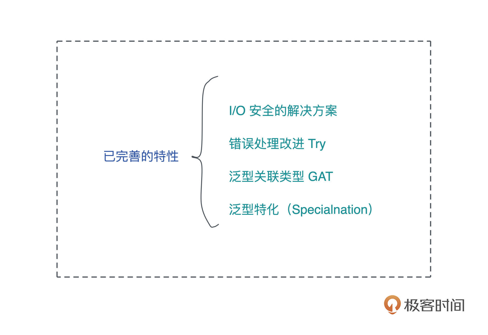
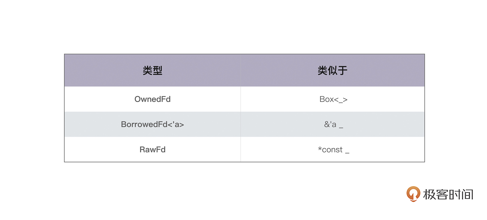
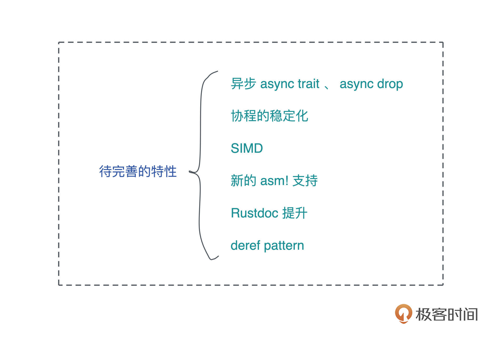

- 00 开篇词 让Rust成为你的下一门主力语言.md.html
- 01 内存：值放堆上还是放栈上，这是一个问题.md.html
- 02 串讲：编程开发中，那些你需要掌握的基本概念.md.html
- 03 初窥门径：从你的第一个Rust程序开始！.md.html
- 04 get hands dirty：来写个实用的CLI小工具.md.html
- 05 get hands dirty：做一个图片服务器有多难？.md.html
- 06 get hands dirty：SQL查询工具怎么一鱼多吃？.md.html
- 07 所有权：值的生杀大权到底在谁手上？.md.html
- 08 所有权：值的借用是如何工作的？.md.html
- 09 所有权：一个值可以有多个所有者么？.md.html
- 10 生命周期：你创建的值究竟能活多久？.md.html
- 11 内存管理：从创建到消亡，值都经历了什么？.md.html
- 12 类型系统：Rust的类型系统有什么特点？.md.html
- 13 类型系统：如何使用trait来定义接口？.md.html
- 14 类型系统：有哪些必须掌握的trait？.md.html
- 15 数据结构：这些浓眉大眼的结构竟然都是智能指针？.md.html
- 16 数据结构：Vec_T_、&[T]、Box_[T]_ ，你真的了解集合容器么？.md.html
- 17 数据结构：软件系统核心部件哈希表，内存如何布局？.md.html
- 18 错误处理：为什么Rust的错误处理与众不同？.md.html
- 19 闭包：FnOnce、FnMut和Fn，为什么有这么多类型？.md.html
- 20 4 Steps ：如何更好地阅读Rust源码？.md.html
- 21 阶段实操（1）：构建一个简单的KV server-基本流程.md.html
- 22 阶段实操（2）：构建一个简单的KV server-基本流程.md.html
- 23 类型系统：如何在实战中使用泛型编程？.md.html
- 24 类型系统：如何在实战中使用trait object？.md.html
- 25 类型系统：如何围绕trait来设计和架构系统？.md.html
- 26 阶段实操（3）：构建一个简单的KV server-高级trait技巧.md.html
- 27 生态系统：有哪些常有的Rust库可以为我所用？.md.html
- 28 网络开发（上）：如何使用Rust处理网络请求？.md.html
- 29 网络开发（下）：如何使用Rust处理网络请求？.md.html
- 30 Unsafe Rust：如何用C++的方式打开Rust？.md.html
- 31 FFI：Rust如何和你的语言架起沟通桥梁？.md.html
- 32 实操项目：使用PyO3开发Python3模块.md.html
- 33 并发处理（上）：从atomics到Channel，Rust都提供了什么工具？.md.html
- 34 并发处理（下）：从atomics到Channel，Rust都提供了什么工具？.md.html
- 35 实操项目：如何实现一个基本的MPSC channel？.md.html
- 36 阶段实操（4）：构建一个简单的KV server-网络处理.md.html
- 37 阶段实操（5）：构建一个简单的KV server-网络安全.md.html
- 38 异步处理：Future是什么？它和async_await是什么关系？.md.html
- 39 异步处理：async_await内部是怎么实现的？.md.html
- 40 异步处理：如何处理异步IO？.md.html
- 41 阶段实操（6）：构建一个简单的KV server-异步处理.md.html
- 42 阶段实操（7）：构建一个简单的KV server-如何做大的重构？.md.html
- 43 生产环境：真实世界下的一个Rust项目包含哪些要素？.md.html
- 44 数据处理：应用程序和数据如何打交道？.md.html
- 45 阶段实操（8）：构建一个简单的KV server-配置_测试_监控_CI_CD.md.html
- 46 软件架构：如何用Rust架构复杂系统？.md.html
- 加餐 Rust2021版次问世了！.md.html
- 加餐 代码即数据：为什么我们需要宏编程能力？.md.html
- 加餐 宏编程（上）：用最“笨”的方式撰写宏.md.html
- 加餐 宏编程（下）：用 syn_quote 优雅地构建宏.md.html
- 加餐 愚昧之巅：你的Rust学习常见问题汇总.md.html
- 加餐 期中测试：参考实现讲解.md.html
- 加餐 期中测试：来写一个简单的grep命令行.md.html
- 加餐 这个专栏你可以怎么学，以及Rust是否值得学？.md.html
- 大咖助场 开悟之坡（上）：Rust的现状、机遇与挑战.md.html
- 大咖助场 开悟之坡（下）：Rust的现状、机遇与挑战.md.html
- 特别策划 学习锦囊（一）：听听课代表们怎么说.md.html
- 特别策划 学习锦囊（三）：听听课代表们怎么说.md.html
- 特别策划 学习锦囊（二）：听听课代表们怎么说.md.html
- 用户故事 绝望之谷：改变从学习开始.md.html
- 用户故事 语言不仅是工具，还是思维方式.md.html
- 结束语 永续之原：Rust学习，如何持续精进？.md.html
- 捐赠
大咖助场 开悟之坡（下）：Rust的现状、机遇与挑战
你好，我是张汉东。
上篇我们聊了Rust语言的现状和机遇，从语言自身的成熟度、语言的生态和应用场景，以及语言的可持续发展能力这三个方面，比较系统地说明Rust发展相对成熟的现状。
Rust 语言作为一门新生语言，虽然目前倍受欢迎，但是面临的挑战还很多。我们今天就聊一聊这个话题。
挑战主要来自两个方面：
- 领域的选择。一门语言唱的再好，如果不被应用，也是没有什么用处。Rust 语言当前面临的挑战就是在领域中的应用。而目前最受关注的是，Rust 进入 Linux 内核开发，如果成功，其意义是划时代的。
- 语言自身特性的进化。Rust 语言还有很多特性需要支持和进化，后面也会罗列一些待完善的相关特性。
Rust For Linux 的进展和预判
从 2020 年 6 月，Rust 进入Linux 就开始成为一个话题。Linux 创建者 Linus 在当时的开源峰会和嵌入式Linux 会议上，谈到了为开源内核寻找未来维护者的问题。
简单跟你讲一讲背景情况。
Linus 提到：“内核很无聊，至少大多数人认为它很无聊。许多新技术对很多人来说应该更加有趣。事实证明，开源内核很难找到维护者。虽然有很多人编写代码，但是很难找到站在上游对别人代码进行 Review 的人选。这不仅仅是来自其他维护者的信任，也来自所有编写代码的人的信任……这只是需要时间的”。
而 Rust 作为一门天生安全的语言，作为C的备选语言，在帮助内核开发者之间建立彼此的信任，是非常有帮助的。三分之二的 Linux 内核安全漏洞( PDF )来自内存安全问题，在 Linux 中引入 Rust 会让其更加安全，这目前基本已经达成一种共识。
而且在今年（2021）的开源峰会上， Linus 说：“我认为C语言是一种伟大的语言，对我来说，C 语言确实是一种在相当低的水平上控制硬件的方法。因此，当我看到C语言代码时，我可以非常接近地猜测编译器的工作，它是如此接近硬件，以至于你可以用它来做任何事情。”
“但是，C语言微妙的类型交互，并不总是合乎逻辑的，对几乎所有人来说都是陷阱，它们很容易被忽视，而在内核中，这并不总是一件好事。”
“Rust 语言是我看到的、第一种看起来像是真的可以解决问题的语言。人们现在已经谈论Rust在内核中的应用很久了，但它还没有完成，可能在明年，我们会开始看到一些首次用Rust编写的无畏模块，也许会被整合到主线内核中。”
Linus 认为 Linux 之所以如此长青，其中一个重要的基石就是乐趣（Fun），并且乐趣也是他一直追求的东西。当人们讨论使用Rust编写一些Linux内核模块的可能性时，乐趣就出现了。
大会进展
在刚过去的 2021 年 9 月 的 Linux Plumbers 大会上， 再一次讨论了 Rust 进入 Linux 内核的进展。
首先是Rust的参与角色问题。
Rust for Linux 的主力开发者 Miguel Ojedal 说，Rust 如果进入内核，就应该是一等公民的角色。Linus 则回答，内核社区几乎肯定会用该语言进行试验。
对Rust代码的review问题也简单讨论过。
Rust 进入内核肯定会有一些维护者需要学习该语言，用来 review Rust 代码。Linus 说， Rust 并不难懂，内核社区任何有能力 review patch 的人，都应该掌握 Rust 语言到足以 Review 该语言代码的程度。
另外还有一些Rust自身特性的稳定问题：
- 目前内核工作还在使用一些 Unstable 的 Rust 特性，导致兼容性不够好，不能确保以后更新的 Rust 编译器能正常编译相关代码。
Ojedal 说，但是如果 Rust 进入 Linux 内核，就会改变这种情况，对于一些 Unstable Rust 特性，Rust 官方团队也会考虑让其稳定。这是一种推动力，迟早会建立一个只使用 Rust 稳定版的内核，到时候兼容问题就会消失。
- 另一位内核开发者 Thomas Gleixner 担心 Rust 并没有正式支持内存顺序，这可能会有问题。
但是另一位从事三十年cpp 并发编程的 Linux 内核维护者 Paul McKenney 则写了一系列文章来探讨 Rust 社区该如何就Rust 进入 Linux 内核这件事正确处理内存顺序模型。对此我也写了另一篇文章【我读】Rust 语言应该使用什么内存模型？ 。
- 关于 Rust 对 GCC 的支持，其中
rustc_codegen_gcc进展最快，目前已通过了部分的rustc测试，rustc_codegen_llvm是目前的主要开发项目，Rust GCC预计在 1~2 年内完成。
这次大会的结论有2点：
- Rust 肯定会在 Linux 内核中进行一次具有时代意义的实验。
- Rust 进入 Linux 内核，对推动 Rust 进化具有很重要的战略意义。
最新消息
2021 年 11 月 11 日，在 Linux 基金会网站上，又放出另一场录制的网络会议： Rust for Linux：编写安全抽象和驱动程序，该视频中 Miguel Ojedal 介绍了 Rust 如何在内核中工作，包括整体基础设施、编译模型、文档、测试和编码指南等。
我对这部分视频内容做了一个简要总结，你可以对照要点找自己需要的看一看。
- 介绍 Unsafe Rust 和 Safe Rust。
- 在 Linux 内核中使用 Rust ，采用一个理念：封装 Unsafe 操作，提供一个安全抽象给内核开发者使用。这个安全抽象位于 https://github.com/Rust-for-Linux/linux/tree/rust/rust 的
kernel模块中。 - 给出一个简单的示例来说明如何编写内核驱动。
- 对比 C 语言示例，给出在 Rust 中什么是 Safety 的行为。
- 介绍了文档、测试和遵循的编码准则。
综合上面我们了解到的这些信息，可以推测，Rust for Linux 在不远的将来会进入到 Linux 进行一次试验，这次试验的意义是划时代的。如果试验成功，那么就意味着 Rust 正式从 C 语言手里拿到了时代的交接棒。
Rust 语言特性的完善
下面来聊一聊最近Rust语言又完善了哪些特性。特别说明一下，这些本来就是高级知识，是Rust 语言的挑战，所以这些知识点你现在也许不太理解，但不用害怕，这些只是 Rust 语言进化路上必须要完善的东西，改进只是为了让 Rust 更好。目前并不影响你学习和使用 Rust 。
我们会讲4个已完善的特性，最后也顺带介绍一下还有哪些待完善的特性，供你参考。

安全 I/O 问题
最近Rust官方合并了一个RFC ，通过引入I/O安全的概念和一套新的类型和特质，为AsRawFd和相关特质的用户提供关于其原始资源句柄的保证，从而弥补Rust中封装边界的漏洞。
之前Rust 标准库提供了 I/O 安全性，保证程序持有私有的原始句柄（raw handle），其他部分无法访问它。
但是 FromRawFd::from_raw_fd 是 Unsafe 的，所以在 Safe Rust中无法做到 File::from_raw(7) 这种事，在这个文件描述符上面进行I/O 操作，而这个文件描述符可能被程序的其他部分私自持有。
而且，很多 API 通过接受原始句柄来进行 I/O 操作：
pub fn do_some_io<FD: AsRawFd>(input: &FD) -> io::Result<()> {
some_syscall(input.as_raw_fd())
}
AsRawFd并没有限制as_raw_fd的返回值，所以do_some_io最终可以在任意的RawFd值上进行 I/O操作，甚至可以写do_some_io(&7)，因为RawFd本身实现了AsRawFd。这可能会导致程序访问错误的资源。甚至通过创建在其他部分私有的句柄别名来打破封装边界，导致一些诡异的远隔作用（Action at a distance）。
远隔作用（Action at a distance）是一种程式设计中的反模式，是指程式某一部分的行为会广泛的受到程式其他部分指令的影响，而且要找到影响其他程式的指令很困难，甚至根本无法进行。
在一些特殊的情况下，违反 I/O 安全甚至会导致内存安全。
所以Rust新增了OwnedFd 和 BorrowedFd<'fd>这两种类型，用于替代 RawFd ，对句柄值赋予所有权语义，代表句柄值的拥有和借用。OwnedFd 拥有一个 fd ，会在析构的时候关闭它。BorrowedFd<'fd> 中的生命周期参数，表示对这个 fd 的访问被借用多长时间。
对于Windows来说，也有类似的类型，但都是Handle和Socket形式。

和其他类型相比，I/O 类型并不区分可变和不可变。操作系统资源可以在Rust的控制之外以各种方式共享，所以I/O可以被认为是使用内部可变性。
然后新增了三个概念，AsFd、Into<OwnedFd>和From<OwnedFd>。
这三个概念是AsRawFd::as_raw_fd、IntoRawFd::into_raw_fd和FromRawFd::from_raw_fd的概念性替代，分别适用于大多数使用情况。它们以OwnedFd和BorrowedFd的方式工作，所以它们自动执行其I/O安全不变性。
pub fn do_some_io<FD: AsFd>(input: &FD) -> io::Result<()> {
some_syscall(input.as_fd())
}
使用这个类型，就会避免之前那个问题。由于AsFd只针对那些适当拥有或借用其文件描述符的类型实现，这个版本的do_some_io不必担心被传递假的或悬空的文件描述符。
错误处理改进 Try
目前 Rust 允许通过 ? 操作符，自动返回 Result<T,E> 的 Err(e) ，但是对于 Ok(o) 还需要手动包装。
比如：
fn foo() -> Result<PathBuf, io::Error> {
let base = env::current_dir()?;
Ok(base.join("foo"))
}
那么这就引出了一个术语： Ok-Wrapping 。很明显，这个写法不够优雅，还有很大的改进空间。
因此 Rust 官方成员 withoutboats 开发了一个库 fehler，引入了一个 throw 语法。用法如下：
#[throws(i32)]
fn foo(x: bool) -> i32 {
if x {
0
} else {
throw!(1);
}
}
// 上面foo函数错误处理等价于下面bar函数
fn bar(x: bool) -> Result<i32, i32> {
if x {
Ok(0)
} else {
Err(1)
}
}
通过 throw 宏语法，来帮助开发者省略 Ok-wrapping 和 Err-wrapping 的手动操作。这个库一时在社区引起了一些讨论，它也在促进着 Rust 错误处理的体验提升。
于是错误处理就围绕着 Ok-wrapping 和 Err-wrapping 这两条路径发展着，该如何设计语法才更加优雅，成为了讨论的焦点。
经过很久很久的讨论，try-trait-v2 RFC 被合并了，意味着一个确定的方案出现了。在这个方案中，引入了一个新类型ControlFlow和一个新的trait FromResidual。
ControlFlow 的源码：
enum ControlFlow<B, C = ()> {
/// Exit the operation without running subsequent phases.
Break(B),
/// Move on to the next phase of the operation as normal.
Continue(C),
}
impl<B, C> ControlFlow<B, C> {
fn is_break(&self) -> bool;
fn is_continue(&self) -> bool;
fn break_value(self) -> Option<B>;
fn continue_value(self) -> Option<C>;
}
ControlFlow 中包含了两个值：
ControlFlow::Break，表示提前退出。但不一定是Error的情况，也可能是Ok。ControlFlow::Continue，表示继续。
新的trait FromResidual：
trait FromResidual<Residual = <Self as Try>::Residual> {
fn from_residual(r: Residual) -> Self;
}
Residual 这个单词有“剩余”的意思，因为要把 Result/Option/ ControlFlow 之类的类型，拆分成两部分（两条路径），用这个词也就好理解了。
而 Try trait 继承自 FromResidual trait ：
pub trait Try: FromResidual {
/// The type of the value consumed or produced when not short-circuiting.
type Output;
/// A type that "colours" the short-circuit value so it can stay associated
/// with the type constructor from which it came.
type Residual;
/// Used in `try{}` blocks to wrap the result of the block.
fn from_output(x: Self::Output) -> Self;
/// Determine whether to short-circuit (by returning `ControlFlow::Break`)
/// or continue executing (by returning `ControlFlow::Continue`).
fn branch(self) -> ControlFlow<Self::Residual, Self::Output>;
}
pub trait FromResidual<Residual = <Self as Try>::Residual> {
/// Recreate the type implementing `Try` from a related residual
fn from_residual(x: Residual) -> Self;
}
所以，在 Try trait 中有两个关联类型：
Output，如果是 Result 的话，就对应 Ok-wrapping 。Residual，如果是 Result 的话，就对应 Err-wrapping 。
所以，现在 ? 操作符的行为就变成了：
match Try::branch(x) {
ControlFlow::Continue(v) => v,
ControlFlow::Break(r) => return FromResidual::from_residual(r),
}
然后内部给 Rusult 实现 Try ：
impl<T, E> ops::Try for Result<T, E> {
type Output = T;
type Residual = Result<!, E>;
#[inline]
fn from_output(c: T) -> Self {
Ok(c)
}
#[inline]
fn branch(self) -> ControlFlow<Self::Residual, T> {
match self {
Ok(c) => ControlFlow::Continue(c),
Err(e) => ControlFlow::Break(Err(e)),
}
}
}
impl<T, E, F: From<E>> ops::FromResidual<Result<!, E>> for Result<T, F> {
fn from_residual(x: Result<!, E>) -> Self {
match x {
Err(e) => Err(From::from(e)),
}
}
}
再给 Option/Poll 实现 Try ，就能达成错误处理大一统。
泛型关联类型 GAT
泛型关联类型在 RFC 1598 中被定义。该功能特性经常被对比于 Haskell 中的 HKT(Higher Kinded Type)，也就是高阶类型。
虽然这两个类型相似，但是 Rust 并没有把 Haskell 的HKT 原样照搬，而是针对 Rust 自身特性给出GAT(Generic associated type) 的概念。目前GAT 支持的进展可以在issues #44265 中被跟踪，也许在年内可以稳定。
什么是泛型关联类型？ 见下面代码：
trait Iterable {
type Item<'a>; // 'a 也是泛型参数
}
trait Foo {
type Bar<T>;
}
就是这样一个简单的语法，让我们在关联类型里也能参与类型构造，就是实现起来却非常复杂。
但无论多复杂，这个特性是 Rust 语言必须要支持的功能，它非常有用。最典型的就是用来实现流迭代器：
trait StreamingIterator {
type Item<'a>;
fn next<'a>(&'a mut self) -> Option<Self::Item<'a>>;
}
现在 Rust 还不支持这种写法。这种写法可以解决当前迭代器性能慢的问题。-
比如标准库中的std::io::lines 方法，可以为 io::BufRead 类型生成一个迭代器，但是它当前只能返回 io::Result<Vec<u8>>，这就意味着它会为每一行进行内存分配，而产生一个新的Vec<u8> ，导致迭代器性能很慢。StackOverflow上有这个问题的讨论和优化方案。
但是如果支持 GAT 的话，解决这个问题将变得非常简单：
trait Iterator {
type Item<'s>;
fn next(&mut self) -> Option<Self::Item<'_>>;
}
impl<B: BufRead> Iterator for Lines<B> {
type Item<'s> = io::Result<&'s str>;
fn next(&mut self) -> Option<Self::Item<'_>> { … }
}
GAT 的实现还能推进“异步 trait”的支持。目前 Rust 异步还有很多限制，比如 trait 无法支持 async 方法，也是因为GAT 功能未完善而导致的。
泛型特化Specialization
泛型特化这个概念，对应 Cpp 的模版特化。但是 Cpp 对特化的支持是相当完善，而 Rust 中特化还未稳定。
在 RFC #1210 中定义了 Rust 的泛型特化的实现标准，在 issue #31844 对其实现状态进行了跟踪。目前还有很多未解决的问题。
什么是泛型特化呢？
trait Example {
type Output;
fn generate(self) -> Self::Output;
}
impl<T> Example for T {
type Output = Box<T>;
fn generate(self) -> Box<T> { Box::new(self) }
}
impl Example for bool {
type Output = bool;
fn generate(self) -> bool { self }
}
简单来说，就是可以为泛型以及更加具体的类型来实现同一个 trait 。在调用该trait 方法时，倾向于优先使用更具体的类型实现。这就是对“泛型特化”最直观的一个理解。
泛型特化带来两个重要意义：
- 性能优化。特化扩展了零成本抽象的范围，可以为某个统一抽象下的具体实现，定制高性能实现。
- 代码重用。泛型特化可以提供一些默认（但不完整的）实现，某些情况下可以减少重复代码。
其实曾经特化还要为“高效继承（efficient-inheritance）”做为实现基础，但是现在高效继承这个提议并未被正式采纳。但我想，作为代码高效重用的一种手段，在未来肯定会被重新提及。
泛型特化功能，离最终稳定还有很长的路，目前官方正准备稳定特化的一个子集（subset）叫 min_specialization，旨在让泛型特化有一个最小化可用（mvp）的实现，在此基础上再慢慢稳定整体功能。现在 min_specialization 还没有具体稳定的日期，如果要使用此功能，只能在 Nightly Rust 下添加 #![feature(min_specialization)] 来使用。
#![feature(min_specialization)]
use std::fmt::Debug;
trait Destroy {
fn destroy(self);
}
impl<T: Debug> Destroy for T {
default fn destroy(self) {
println!("Destroyed something!");
}
}
struct Special;
impl Destroy for Special {
fn destroy(self) {
println!("Destroyed Special something!");
}
}
fn main() {
"hello".destroy(); // Destroyed something!
let sp = Special;
sp.destroy(); // Destroyed Special something!
}
其他待完善特性

异步 async trait、async drop
Rust 目前异步虽然早已稳定，但还有很多需要完善的地方。为此，官方创建了异步工作组，并且创建了异步基础计划来推动这一过程。
对于异步 trait 功能，首先会稳定的一个 mvp 功能是：trait 中的静态的 async fn 方法。
trait Service {
async fn request(&self, key: i32) -> Response;
}
struct MyService {
db: Database
}
impl Service for MyService {
async fn request(&self, key: i32) -> Response {
Response {
contents: self.db.query(key).await.to_string()
}
}
}
在 trait 中支持 async fn 非常有用。但是目前只能通过 async-trait 来支持这个功能。因为当前 trait 中直接写 async fn 不是动态安全的（dyn safety，之前叫对象安全）。
现在这个 mvp 功能提出将 async fn 脱糖为静态分发的 trait，比如这样：
trait Service {
type RequestFut<'a>: Future<Output = Response>
where
Self: 'a;
fn request(&self, key: i32) -> RequestFut;
}
impl Service for MyService {
type RequestFut<'a> = impl Future + 'a
where
Self: 'a;
fn request<'a>(&'a self, key: i32) -> RequestFut<'a> {
async { ... }
}
}
对于 异步 drop 功能，目前也给出了一个方案，但没有类似 mvp 的落地计划。更多解释可以去查看异步基础计划的内容。
协程的稳定化
目前 Rust 的异步是基于一种半协程机制生成器（ Generator） 来实现的，但生成器特性并未稳定。围绕“生成器特性”稳定的话题，在 Rust 论坛不定期会提出，因为生成器这个特性在其他语言中，也是比较常见且有用的特性。
但目前 Rust 团队对此并没有一个确切的设计，当前 Rust 内部的生成器机制只是为了稳定实现 异步编程而采取的临时设计。 所以这个特性也是 Rust 语言未来的挑战之一。
SIMD
众所周知，计算机程序需要编译成指令才能让 CPU 识别并执行运算。所以，CPU 指令处理数据的能力，是衡量 CPU 性能的重要指标。
为了提高 CPU 指令处理数据的能力，半导体厂商在 CPU 中推出了一些可以同时并行处理多个数据的指令 —— SIMD指令。SIMD 的全称是 Single Instruction Multiple Data，中文名“单指令多数据”。顾名思义，一条指令处理多个数据。
经过多年的发展，支持 SIMD 的指令集有很多。各种 CPU 架构都提供各自的 SIMD 指令集，比如 X86/MMX/SSE/AVX等指令集。Rust 目前有很多架构平台下的指令集，但目前还未稳定，你可以在 core::arch 模块下找到，但这些都是可以具体架构平台相关的，并不能方便编写跨平台的 SIMD 代码。如果想编写跨平台 SIMD 代码，需要用到第三方库 packed_simd 。
最近几天，Rust 官方团队发布了 portable-simd ，你可以在 Nightly 下使用这个库来代替 packed_simd 了。这个库使得用 Rust 开发跨平台 SIMD 更加容易和安全。在不久的将来，也会引入到标准库中稳定下来。
新的 asm! 支持
asm! 宏允许在 Rust 中内联汇编。
在 RFC #2873 中规定了新的 asm!宏语法，将用于兼容 ARM、x86 和 RISC-V 等架构，方便在未来添加更多架构支持。之前的 asm! 宏被重命名为 llvm_asm!。目前新的 asm! 已经接近稳定状态，可在 issue #72016 中跟踪。
总的来说，就是让 asm! 宏更加通用，相比于 llvm_asm!，它有更好的语法。
// 旧的 asm! 宏写法
let i: u64 = 3;
let o: u64;
unsafe {
asm!(
"mov {0}, {1}",
"add {0}, {number}",
out(reg) o,
in(reg) i,
number = const 5,
);
}
assert_eq!(o, 8);
// 新的 asm! 宏写法：
let x: u64 = 3;
let y: u64;
unsafe {
asm!("add {0}, {number}", inout(reg) x => y, number = const 5);
}
assert_eq!(y, 8);
上面示例中，inout(reg) x语句表示编译器应该找到一个合适的通用寄存器，用x的当前值准备该寄存器，将加法指令的输出存储在同一个通用寄存器中，然后将该通用寄存器的值存储在x中。
新的 asm! 宏的写法更像 println! 宏，这样更加易读。而旧的写法，需要和具体的汇编语法相绑定，并不通用。
Rustdoc 提升
Rust 是一门优雅的语言，并且这份优雅是非常完整的。除了语言的诸多特性设计优雅之外，还有一个亮点就是 Rustdoc，Rust 官方 doc 工作组立志让 Rustdoc 成为一个伟大的工具。
Rustdoc 使用简单，可以创建非常漂亮的页面，使编写文档成为一种乐趣。关于 Rustdoc 详细介绍你可以去看 Rustdoc book 。
Rustdoc 工作组最近在不断更新其功能，宗旨就是让编写文档更加轻松，消除重复的工作。比如，可以把项目的README文档，通过 #[doc] 属性来指派给某个模块，从而可以减少没必要的重复。
当然，未来的改进还有很多工作要做，这也算是 Rust 未来一大挑战。
deref pattern
deref pattern 是一个代表，它可以看作是Rust 官方对 Rust 语言诸多持续改进中的一个影子。
该特性简单来说，就是想让 Rust 语言在 match 模式匹配中也支持 deref：
let x: Option<Rc<bool>> = ...;
match x {
Some(deref true) => ...,
Some(x) => ...,
None => ...,
}
比如上面代码，匹配 Option<Rc<bool>> 的时候，可以无视其中的 Rc，直接透明操作 bool。上面例子里是一种解决方案，就是增加一个 deref 关键字。当然最终使用什么方案并未确定。
这里提到这个特性，是想说，Rust 语言目前在人体工程学方面，还有很多提升的空间；并且，Rust 团队也在不断的努力，让 Rust 语言使用起来更加方便和优雅。
小结
Rust 语言自身相对已经成熟，生态也足够丰富，并且在一些应用领域崭露头角。
Rust在系统语言的地位上，更像是当年的 C 语言。同样是通用语言，Rust现在在操作系统、云原生、物联网等关键系统领域成为刚需。因为“安全”现在已经是必选项了，这是 Rust 语言的时代机遇。同时，Rust 语言也在不同领域造就了新的职业岗位。
我们也看到，Rust 语言还有很多需要完善的地方，但这些都在官方团队的计划之中。我相信，在 Rust 基金会的引领下，Rust 肯定会迈向广泛应用的美好未来。
© 2019 - 2023 Liangliang Lee. Powered by gin and hexo-theme-book.